兼容 LocalSend
实现 LocalSend 协议 v2.2，与官方客户端互相发现、互相收发，也就能和 Android、Linux 上的 LocalSend 互传。
局域网文件与剪贴板互传，数据不出你的网络
在同一 Wi‑Fi 下的 iPhone、Mac 和 Windows 之间发送照片、视频、整个文件夹与剪贴板。不用账号，不经云端，没有大小限制——数据直接从一台设备到另一台。
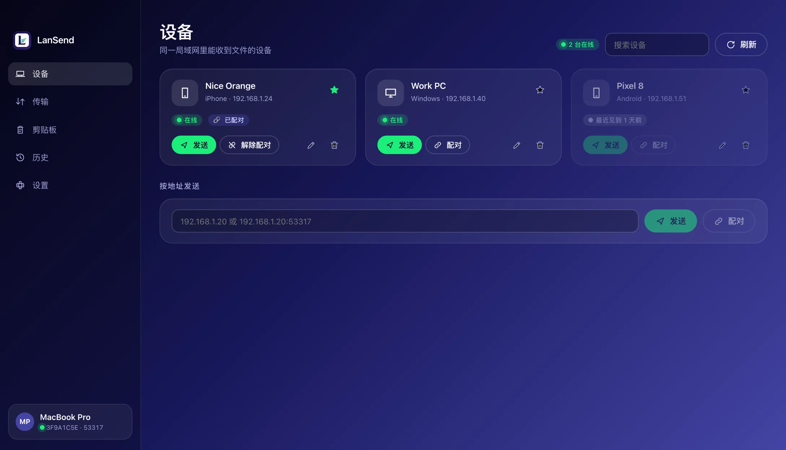
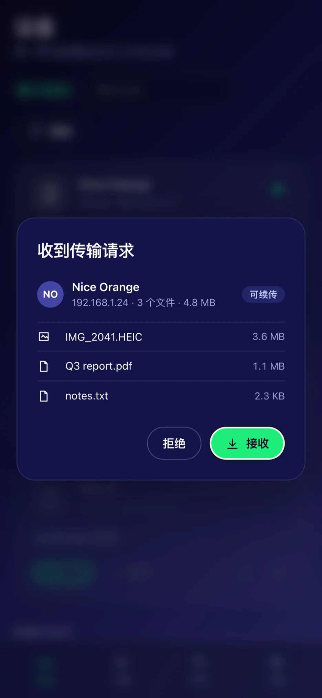
一个局域网、一次点击，剩下的交给它。
实现 LocalSend 协议 v2.2，与官方客户端互相发现、互相收发，也就能和 Android、Linux 上的 LocalSend 互传。
设备之间直连，没有服务器、没有账号、没有遥测，也没有文件大小限制。断网的局域网里照样能用。
macOS、Windows 与 iOS 同一套设计：桌面端侧栏，手机端自动换成底部标签栏。
双向 TLS（mTLS）加密，指纹核对；可要求对方输入 PIN，每个文件收完核对 SHA‑256。
配对后，文本、图片与文件列表在电脑之间自动同步（macOS 与 Windows）。
传输中断、设备睡眠、Wi‑Fi 抖动之后从断点继续，不用从头再来。
整个目录一起发，目录结构原样保留；接收端可按设备、日期或类型分目录存放。
按内容识别类型，历史里直接显示图片缩略图（HEIC / AVIF 走系统解码器），音乐显示标题与时长。
收发记录可查、可重发、可删除，也可以一键清空。
lan-send 带发现、收发、配对、剪贴板与历史子命令，macOS、Windows 与 Linux 都有。
简中、繁中、英、日、韩、德、法、西；跟随系统深浅色，也可以手动指定。
流式读写，几十 GB 的文件也不占内存；文件名净化，接收目录之外零写入。
截图取自应用本身，未经修饰。
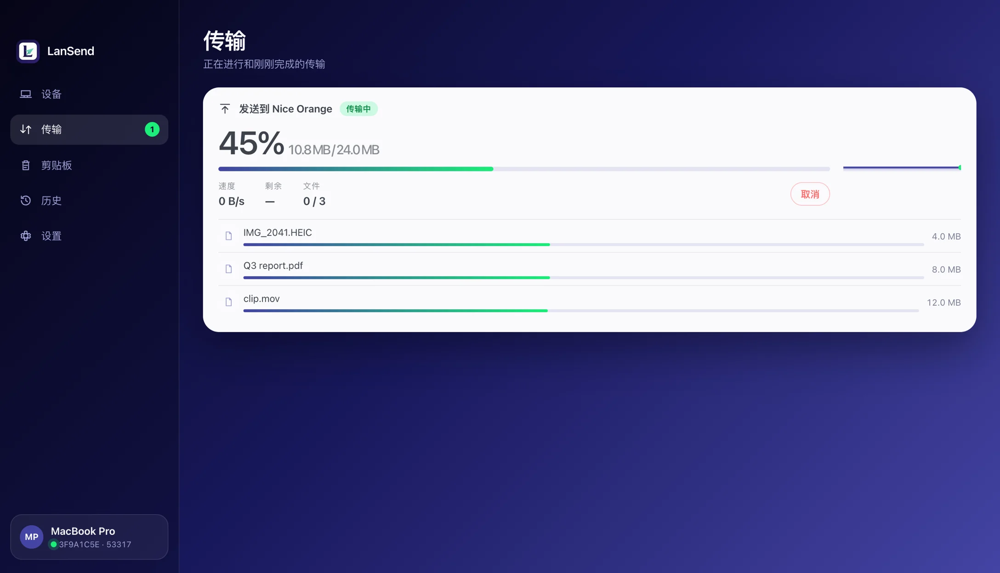
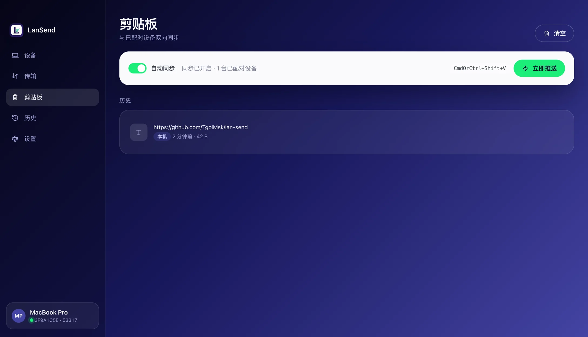
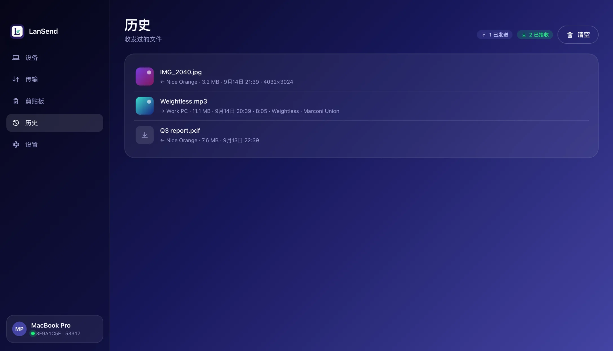
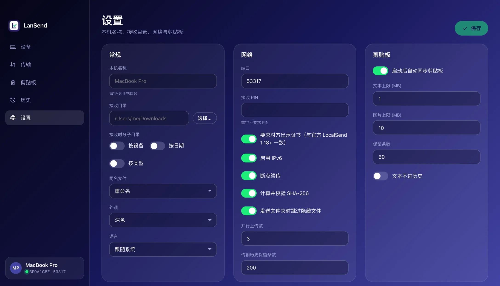
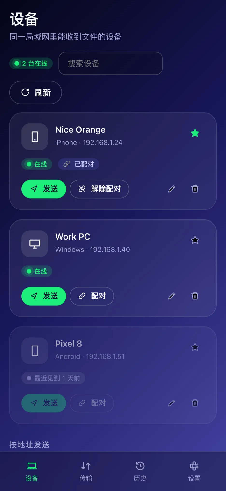
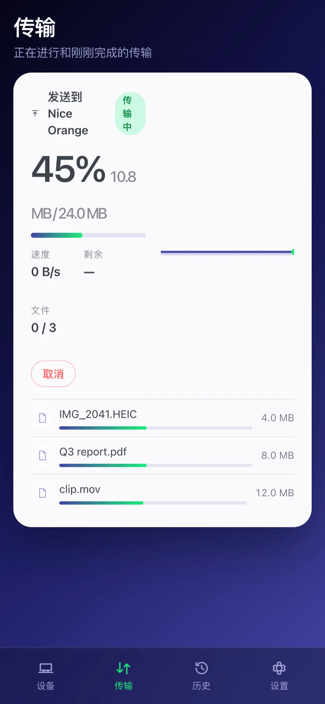
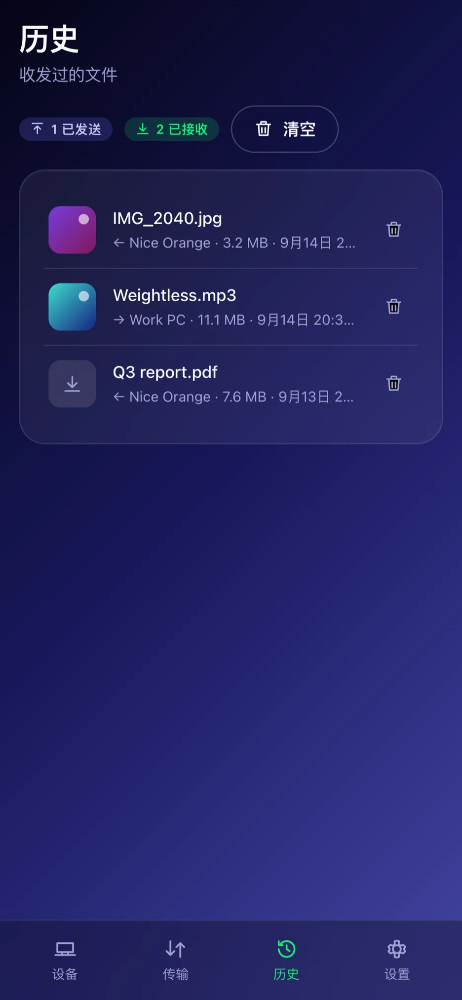
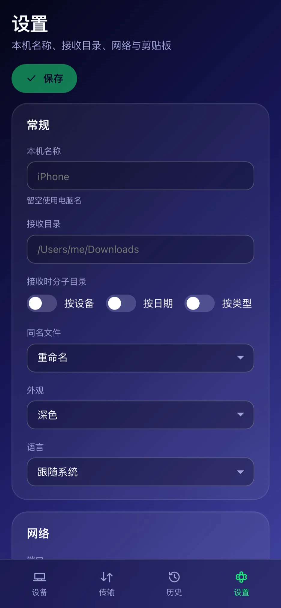
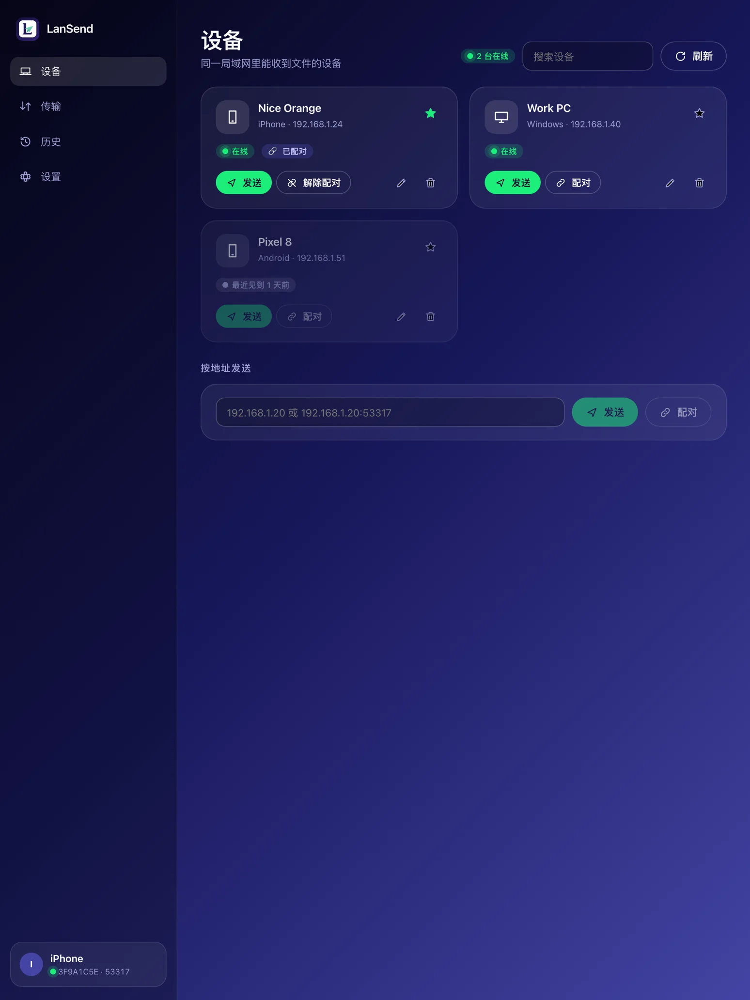
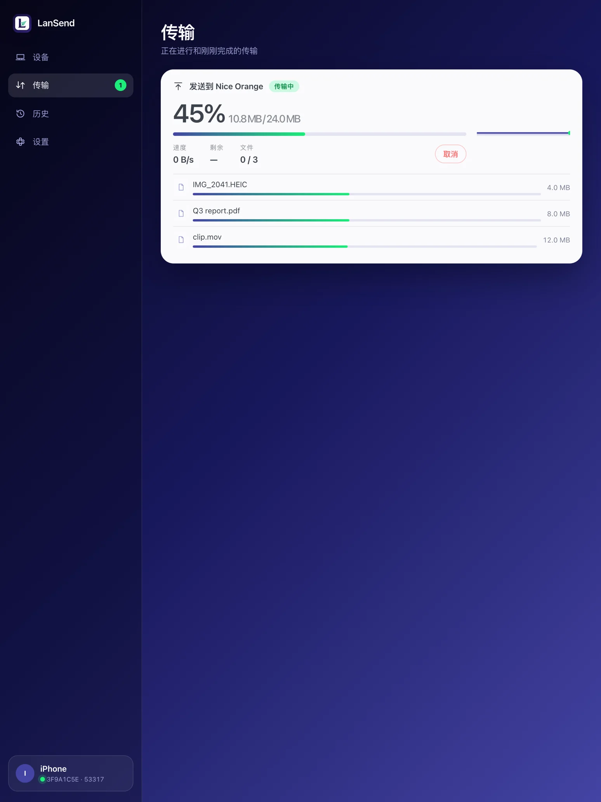
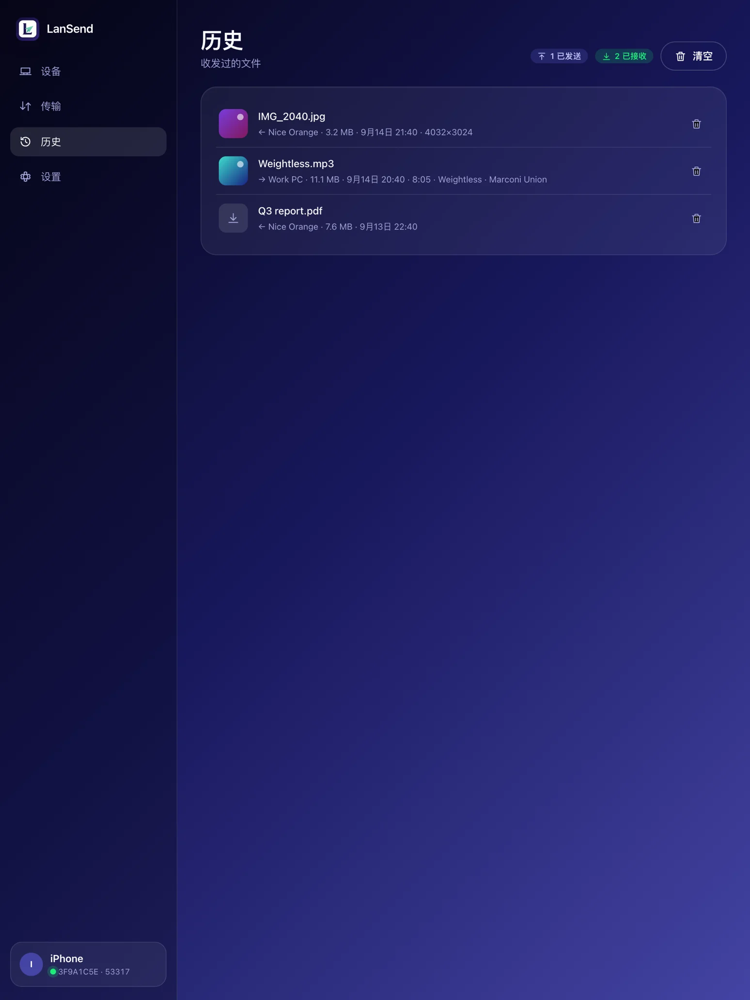
和官方 LocalSend 一样的协议：UDP 组播发现 + HTTPS 直传。
每台设备用 UDP 组播在局域网里播报自己的别名与指纹，几百毫秒就互相看见。公司或公共 Wi‑Fi 屏蔽组播时，直接输入对方 IP 也能发。
接收端先看到文件清单再决定收不收，可以只收其中几个。可以要求对方输 PIN，或者先配对一次（两端显示同一个 6 位码）。
两台设备之间建 mTLS 加密连接，文件流式写入你指定的目录，收完逐个核对 SHA‑256。中途断了下次接着传。
协议细节见 LocalSend 接口清单 与 协议扩展说明：断点续传、配对与剪贴板同步是私有扩展，官方客户端会自动忽略。
免费、开源，安装包由 GitHub Actions 构建、签名并公证。
通用二进制，Apple Silicon 与 Intel 都能装。要求 macOS 12 或更新。
要求 Windows 10 或更新（系统自带 WebView2；没有的话安装程序会提示）。
要求 iOS 15 或更新，iPhone 与 iPad 通用。首次启动请允许“本地网络”，否则看不到其他设备。
同一套 Rust 核心，不带界面，适合脚本与服务器。Linux 只有命令行版。
和应用共用一套核心与配置：同样的发现、同样的加密、同样的历史。
完整用法见 lan-send --help 与仓库 README。
可以。LanSend 实现的是同一套 LocalSend 协议 v2.2，双方互相发现、互相收发都没问题，也包括 Android 和 Linux 上的 LocalSend。断点续传、配对和剪贴板同步是私有扩展，官方客户端会忽略这些字段，不影响正常传输。
都不会。文件在两台设备之间直连传输，没有中转服务器，不需要注册和登录，应用也不收集任何数据、不含广告与内购。
先确认两台设备连的是同一个 Wi‑Fi、都打开了 LanSend 或 LocalSend；iOS 首次使用要允许“本地网络”权限。有些公司或公共 Wi‑Fi 会禁止设备之间的组播，这时在“设备”页的“按地址发送”里直接输入对方 IP 即可。
macOS 与 Windows 默认放在“下载”文件夹，可以在设置里改；还能按设备、日期或类型自动分目录。iOS 上在“文件”App 的“我的 iPhone › LanSend”里。
不支持。iOS 不允许应用在后台读剪贴板，强行做出来也不可靠，所以剪贴板同步只在 macOS 与 Windows 上提供。
MIT。核心库、桌面应用、iOS 应用与命令行工具的完整源码都在 GitHub 上，欢迎提 issue 和 PR。